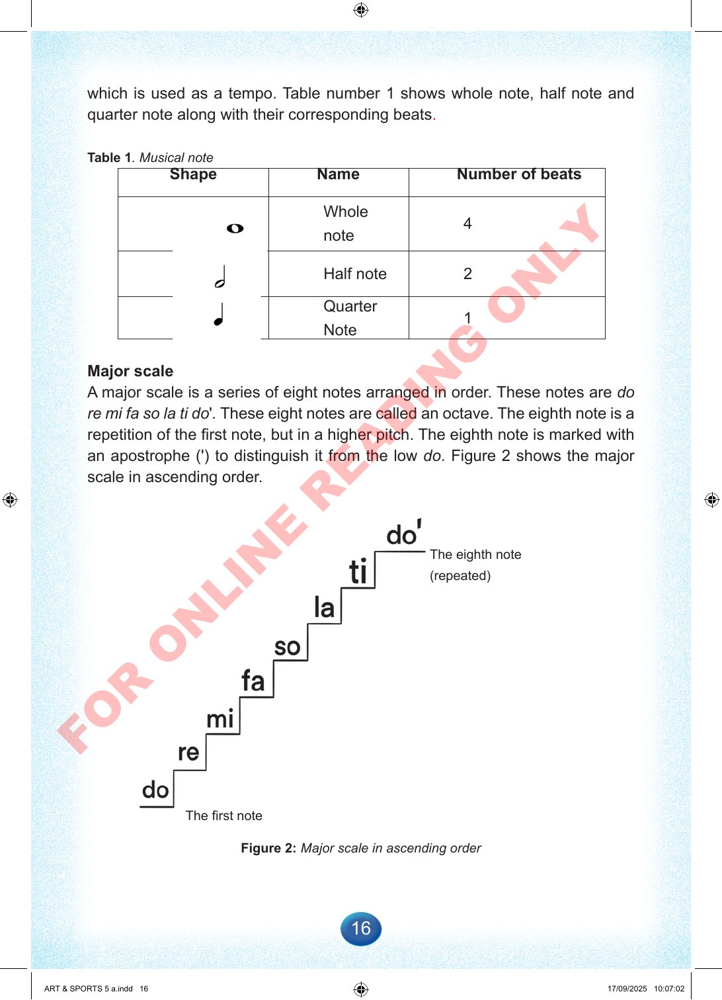

16
which
is
used
as
a
tempo.
Table
number
1
shows
whole
note,
half
note
and
quarter
note
along
with
their
corresponding
beats.
Table
1.
Musical
note
Shape
Name
Number
of
beats
Whole
note
4
Half
note
2
Quarter
Note
1
Major
scale
A
major
scale
is
a
series
of
eight
notes
arranged
in
order.
These
notes
are
do
re
mi
fa
so
la
ti
do'.
These
eight
notes
are
called
an
octave.
The
eighth
note
is
a
repetition
of
the
first
note,
but
in
a
higher
pitch.
The
eighth
note
is
marked
with
an
apostrophe
(')
to
distinguish
it
from
the
low
do.
Figure
2
shows
the
major
scale
in
ascending
order.
Figure
2:
Major
scale
in
ascending
order
The
eighth
note
(repeated)
The
first
note
ART
&
SPORTS
5
a.indd
16
ART
&
SPORTS
5
a.indd
16
17/09/2025
10:07:02
17/09/2025
10:07:02
F
O
R
O
N
L
I
N
E
R
E
A
D
I
N
G
O
N
L
Y